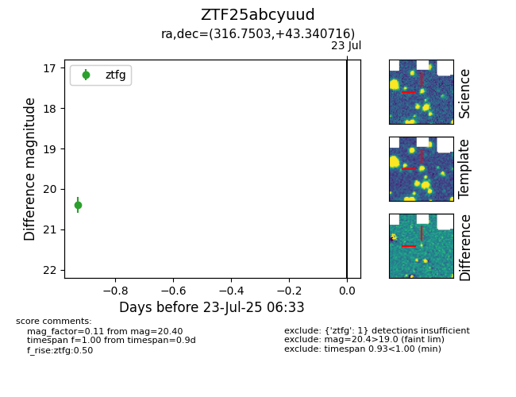

Target ZTF25abcyuud at 2025-07-23 12:37, see:
FINK: fink-portal.org/ZTF25abcyuud
Lasair: lasair-ztf.lsst.ac.uk/objects/ZTF25abcyuud
ALeRCE: alerce.online/object/ZTF25abcyuud
alt names
ZTF25abcyuud (ztf,fink)
coordinates:
equatorial (ra, dec) = (316.7503,+43.34072)
galactic (l, b) = (85.7451,-2.74957)
photometry
last ztfg=20.40
1 ztfg detections
